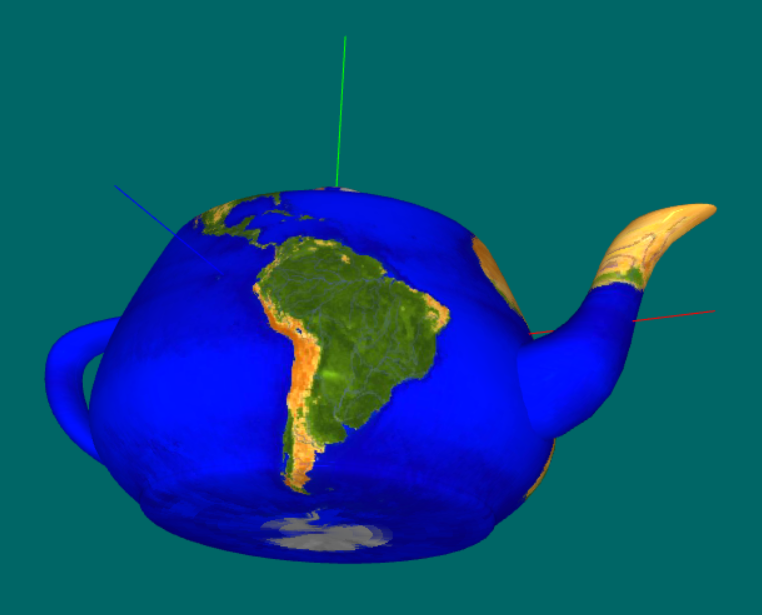
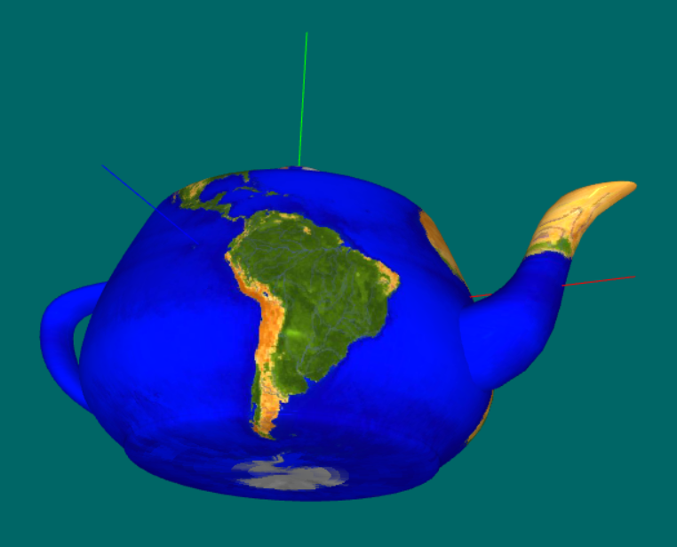
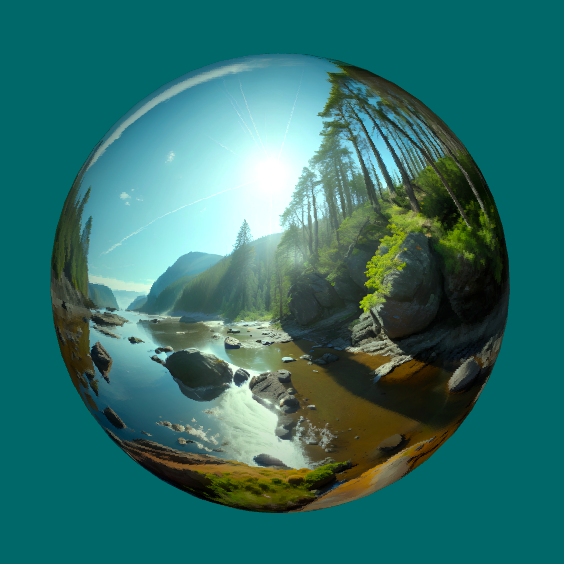

Equirectangular and Mercator projection viewer using lighting combined with texture mapping written in Vanilla Javascript and WebGL.
For educational purposes only.
This is just a demo for teaching CG, which became overly complicated, and it is similar to Lighting2, except we define a 3x3 matrix for material properties and a 3x3 matrix for light properties that are passed to the fragment shader as uniforms. Edit the light and material matrices in the global variables to experiment or startForReal to choose a model and select face or vertex normals. Three.js only uses face normals for polyhedra, indeed.
Texture coordinates can be set in each model or sampled at each pixel in the fragment shader. We can also approximate a sphere by subdividing a convex regular polyhedron and solving Mipmapping artifact issues by using Tarini's method, in this case. These artifacts show up due to the discontinuity in the seam when crossing the line with 0 radians on one side and 2π on the other. Some triangles may have edges that cross this line, causing the wrong mipmap level 0 to be chosen.
To lay a map onto a sphere, textures should have an aspect ratio of 2:1 for equirectangular projections or 1:1 (squared) for Mercator projections. Finding high-resolution, good-quality, and free cartographic maps is really difficult.
The initial position on the screen takes into account the obliquity of the earth (23.44°), and the Phong highlight projects onto the equator line if the user has not interacted using the Arcball. If PHP is running on the HTTP server, then any image file in directory textures will be available in the menu. Otherwise, sorry GitHub pages, only the images listed in the HTML file.
Mercator texture coordinates can be set in a model directly or in the shader that samples texture coordinates for each pixel. Since a unit sphere fits in the WebGL NDC space, it is possible to go into each fragment from:
- cartesian → spherical (equirectangular) → Mercator
- (x, y, z) → (long, lat) → (x, y)
- sample texture at (x, y)
As a final remark, I thought it would be easier to deal with map images as textures, but I was mistaken. I tried, as long as I could, not to rewrite third-party code. Unfortunately, this was impossible. The main issue was that the prime meridian is at the center of a map image and not at its border, which corresponds to its antimeridian.
Initially, I used the basic-object-models-IFS package, but the models had their z-axis pointing up as the zenith, and I wanted the y-axis to be the north pole (up). Therefore, I switched to Three.js, and almost everything worked just fine. Nonetheless, a sphere created by subdividing a polyhedron had its texture coordinates rotated by 180° and a cylinder or cone by 90°. In fact, there is a poorly documented parameter, thetaStart, that does fix just that.
Nevertheless, I decided to adapt the hws software to my needs by introducing a global hook, yNorth, and rotating the models accordingly. Furthermore, I added the parameter stacks to uvCone and uvCylinder, to improve interpolation and fixed the number of triangles generated in uvCone. This way, the set of models in hws and three.js became quite similar, although I kept the "zig-zag" mesh for cones and cylinders in hws (I have no idea whether it provides any practical advantage). A user can switch between hws and three.js models by pressing a single key (Alt, ❖ or ⌘) in the interface.
There is a lot of redundancy in the form of vertex duplication in all of these models, which may preclude mipmapping artifacts. The theoretical number of vertices, ùë£, for a manifold model and the actual number of vertices (üî¥) are displayed in the interface. The number of edges, e, is simply three times the number of triangles, t, divided by two.
For any triangulation of a compact surface, the following holds (page=52):- 2e = 3t,
- e = 3(ùë£ - œá), œá(S¬≤)=2,
- ùë£ ≥ 1/2 (7 + ‚àö(49 - 24œá)).
As a proof of concept, I implemented a sphere model without any vertex duplication. Besides being much harder to code, its last slice (e.g., slices = 48) goes from 6.152285613280011 (2π/48 * 47) to 0.0 and not 2π (if there was an extra duplicate vertex), which generates texture coordinates going from 0.9791666666666666 (47/48) to 0.0 and not 1.0. Although this is what causes the mipmapping artifacts, it has nothing to do with the topology of the model but how mimapping is implemented on the GPU.
Of course, these are just polygon meshes suitable for visualization and not valid topological B-rep models that enforce the Euler characteristic by using the winged-edge, quad-edge, or radial-edge data structures required in solid modeling.Homework:
- The application selects a random city and displays its location (when its name is checked in the interface) as the intersection of its line of latitude (parallel) and line of longitude (meridian) on the model surface (preferably a map onto a sphere). Your task is (using the mouse or any pointer device) to pick a point in the texture image and display its location on the map.
- A bigger challenge would be to pick the point directly onto the model's surface, but you'll have to implement a 3D pick in this case by casting a ray and finding its closest (first) intersection (relative to the viewer) with the polygonal surface of the model.
- To determine a ship's latitude at the sea (without a GPS), one needs a sextant. However, what is it necessary to get its longitude? What calculation should be done (it is simpler than you might think)?
- What does the obliquity of the earth have to do with the Glatial periods?
- Since:
- 30/01/2016
- Copyright:
- © 2024 Paulo R Cavalcanti.
- License:
- Licensed under the MIT license.
- Source:
- See:
-
- link - Texture coordinates sampled at each pixel in the fragment shader
- link2 - Texture coordinates sampled at each vertex in the vertex shader
- source
- textures
- Mapping the Sphere
- A Fresh Look at the Method of Archimedes
- From Archimedes to statistics: the area of the sphere
- Archimedes and the area of sphere
- On some information geometric structures concerning Mercator projections
- The Mathematics of Maps
- Globe 3D
- The True Size of ...
- leaflet-truesize plugin
- Navigational Sextant
- CasualNavigationAcademy


North Pole - Y axis 

Equirectangular projection 
Mercator Projection  

Spherical (Equirectangular) Projection Subdivision Sphere Seam - Mipmapping Artifact 

Texture Sampled in Fragment Shader